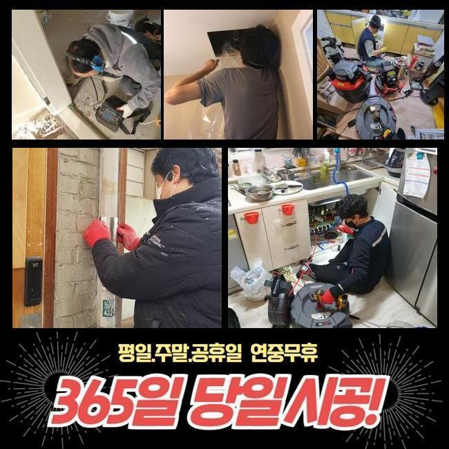
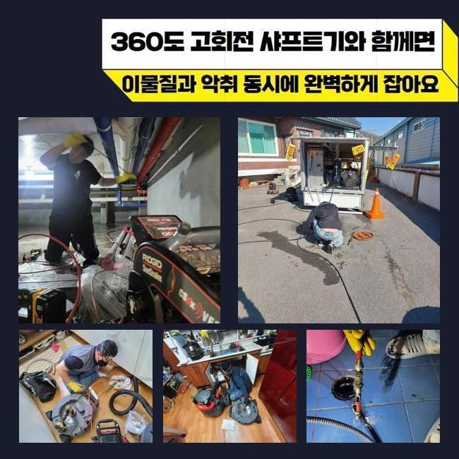
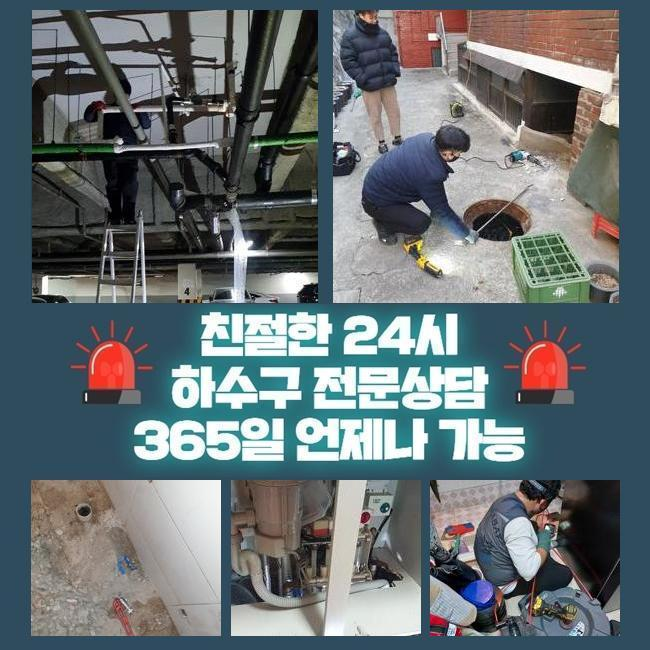
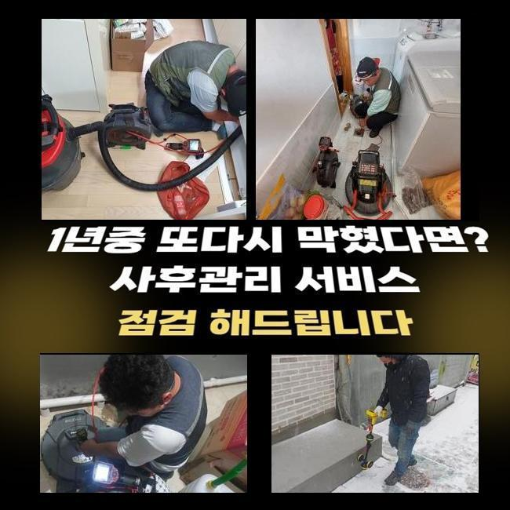
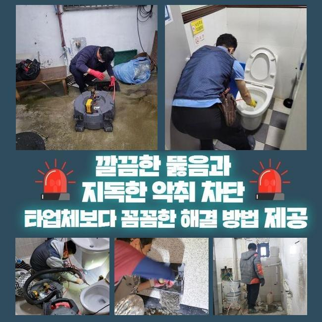
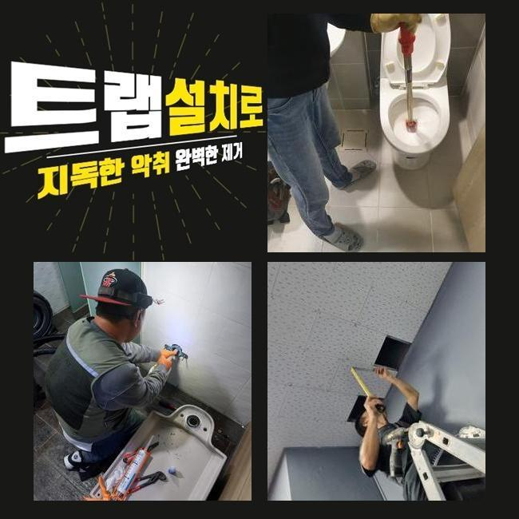
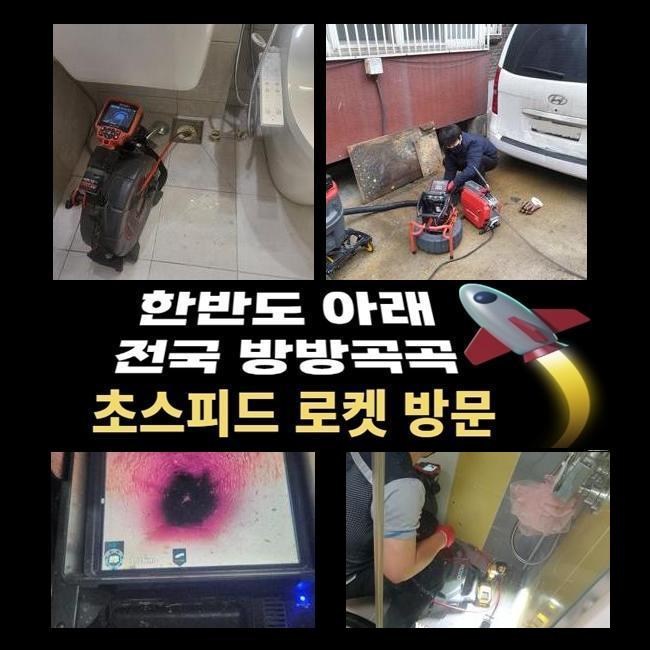

🏠 광진구 광장동화장실역류 군자동 오수맨홀청소 배관막힘누수업체
용인 배관막힘 전문 시공 후기

📋 작업 개요
- 위치: 용인
- 서비스 유형: 배관막힘, 맨홀막힘, 누수수리, 역류해결, 뚫는업체, 배관청소, 고압세척, 설비공사, 악취차단
- 작업 일시: 2025. 3. 4. 22:32
- 업체명: 하수구수사대 (010-5615-2118)
🔍 문제 상황
광진구 광장동화장실역류 군자동 오수맨홀청소 배관막힘누수업체
금일은 아파트에서 우수관 정체로 물이 역류해버린다는 전화를 받았어요
비가 내리면 우수파이프로 빠져나가지 못하고 반대로 넘쳐나서 환경이 지저분해지고 습기도 많아졌다 말씀하셨죠
2~3개월 이전에도 이와 동일한 현상을 목격한적이 있는데 장마철이 지난뒤 더욱더 심해졌다 이야기하셨어요
이로 인해 아파트단지 내부에 오취가 증가했고 거주자들의 불편도 증가하게 되었던거죠
정비를 곧바로 진행해달라 요청하셨고 저희팀은 재빠르게 출동준비를 이행하였죠
장소를 찾아보니 10분도 안되는 곳에 위치한 아파트였습니다
손님분에게 바로 이동해드리겠다고 설명드리고 도구들을 챙긴뒤에 내방하게 되었습니다
현장에 당도하니 놀이터 주변에 우수관로가 있었네요
앞에서 체크해보니 나뭇가지와 비닐 등이 많았고 근처로 이동하니 이를 치우기위한 마대자루와 집게 등이 준비돼 있었네요
역류증상이 심각해지면서 경비직원분들께서 수시로 치우는 상황이었어요
그랬음에도 역류는 나아지지 않았기에 신속한 정비를 바라셨던 거예요

🔎 원인 분석
💡 전문가 진단: 정밀 진단 장비를 사용하여 슬러지의 고착 여부를 판명하고 타격/세척 작업을 실시했습니다.
우수관로는 본래 낮은곳으로 빗물 등이 집약되도록 시설되어야 마땅하지만 여긴 그런 부분이 제대로 반영되지 않은채 공사진행이 되어 역류증세가 늘어나게 된거였죠
이것 극복하려면 굴토과정을 거쳐야 마땅했지만 의뢰인분에게서는 그 부분은 추후에 논의하기로하고 우선 뚫음부터 해달라고 요청토로하셨죠
우수관로의 정체상황을 표면적으로 점검해보았더니 나뭇잎들도 존재하였지만 플라스틱 잔재 등도 굉장히 많았답니다
그것으로 관로가 차단되었고 역류가 일어날 수준으로 문제가 심각해진거에요
고객분에게 혹여 세대내부에서 우수관쪽으로 오물을 흘려보낼수가 있나 여쭤봤는데요
일부주민들이 베란다 청소를 위해서 쓰고 계시다고 말하셨답니다
이러한 것들에 대해서 자주 안내방송을 했지만 똑바로 되지않는 상태라고 설명하셨죠
이문제가 지속된다면 수리후 막힘상황이 다시 생겨나기 쉽다는걸 설명하였고 방예대책을 확립할것을 다짐하셨죠
우수시설을 열어봤더니 고인물이 제대로 빠져나가지 못하는게 바로 파악되었죠
우수관로 근방에 잔재들이 가득차 있었기에 청소를 시작하는 일이 힘겨웠죠
또 관로입구에 잔류하는 슬러지도 많았고 단단하였기 때문에 간소한 장비로 처치하기엔 역부족이었습니다
그래서 저희들은 스프링장비를 동원하여 강력하게 세척해주는 방안을 시작했어요
입구쪽이 비좁았고 가랑비가 내리는 바람에 공정을 이행하기 까다로웠는데요

🔧 작업 과정
이런 악조건에도 의뢰인의 고통을 최소화시키기 위하여 즉각 업무를 실행했답니다
내시경카메라는 관로내부를 검사하고 이물의 양을 확인하는데 핵심이라고 볼수 있답니다
내시경설비를 넣어서 디테일한 막힘상황을 정밀하게 파악가능하며 그것으로 작업시간을 절용할수가 있었답니다
그리고 배관스프링 청소기를 통해 배관을 소제하는 시공이 실행되었죠
우수관로의 사이즈가 작은 경우에 배수망이 설치되지 않아서 찌꺼기들이 손쉽게 흘러드는 형국이 많이 나타납니다
그러면 이물이 누증되고 결국은 관이 차단되어 역류증세가 생겨나거나 냄새가 올라올 가망이 올라가겠죠
그것들을 미연에 막으려면 자주 내부청소를 시행해야 하며 잔재들이 못 들어가게끔 배수망을 두는일도 필요하답니다
그것들과 관련해서 고객께 설명해드렸으며 또 사용빈도가 높은 배관일수록 더 신경써야한다고 강조해 드렸죠
세척을 진행하는 과정에서도 관로 안쪽에 금이 가지는 않았는지 물이 새는 부분은 없나 빈틈없이 검사했어요
이를 통해서 예상하지 못했던 사고상황을 차단하고 주민들의 안녕을 만들어드릴수 있답니다
큰 찌꺼기들을 제거하고나서도 관내부엔 아직도 오염물질들이 남겨져 있었답니다
그것들을 없애려 플렉스샤프트 기기를 사용하기로 했죠
샤프트장비는 재빠르게 움직이는 체인을 활용해서 관로에 적체된 노폐물을 파쇄하는 역할을 수행하고 강인한 파워로 효율적으로 이물들을 세척해낼수 있답니다
그것에 더하여 배수관면을 파손하지 않기에 비교적 편하게 적용가능한 특성이 있답니다
빗줄기가 멈춘다음 바닥부근에 있던 물기를 처치하려 석션기기를 통해 공사를 마쳤답니다
샤프트기기로 처리한 성분들을 수차레 석션기기로 빨아들이며 완전무결하게 트러블을 정리할수 있던거죠
거주자분들의 고초를 줄여드리려 끝까지 최선의 노력으로 일하였으며 파이프는 원래대로 빗물이 빠지는 상태로 수리되었어요
해당 공정으로 정결한 배관을 보존하는 업무가 필수라는 걸 거듭해서 이해하도록 해드렸답니다
우수관로가 차단된다면 단순하게 불편함으로 마감되는게 아니고 한층 고약한 형국으로 연결될수 있어서 상시로 관리해나가야 한다는걸 재차 강조드립니다
특별히 이지점은 우수관로 입구의 시설물이 높게 위치하였기에 한층더 세심하게 청소해야 한다는 것또한 알려드리게 되었죠


✅ 작업 완료
의뢰인분에게서는 배관 내시경 내시경을 통하여 청소한 결과를 바로바로 보실수 있었으며 최종적으로 하수를 내려서 테스트를 진행하였어요
위와 같은 수순으로 아파트단지 안의 우수시설물의 정체를 해결하였고 역류증상까지 완벽히 없어졌죠
관리해나가기 곤란한 우수관로나 기타 배관문제도 전문업체를 통해서 철저히 관측하고 정비받으시길 당부드려요
고객님들의 가정에 문제가 안나타나기를 바랍니다
혹여 역류등이 생긴다면 방치하지말고 조속히 연락주십시오 조속히 내방드릴게요




⚠️ 베란다 누수 및 방수 관리 방법
- ✅ 비가 많이 올 때 창틀 주변이나 아래층 천장에 얼룩이 생기는지 정기적으로 확인해 보세요.
- ✅ 우수관 주변 실리콘 마감이 들뜨거나 깨진 틈새가 있는지 손상 여부를 수시로 체크하세요.
- ✅ 베란다 바닥 타일의 줄눈(메지)이 소실되면 그 틈으로 물이 침투하여 누수가 유발됩니다.
- ✅ 누수 의심 증상 발견 시 방치하면 아래층 손실이 커지므로 즉시 전문가의 진단을 받으십시오.
💡 핵심 정리
- 확실한 장비 작업(내시경 점검 및 샤프트 스케일링)으로 원인을 뿌리 뽑습니다.
- 작업 후 1년 이내에 동일한 부위 재발 시 100% 무상 A/S 서비스를 보장합니다.
- 서울 · 경기 · 인천 전 지역에 24시간 언제든 긴급 출동할 수 있도록 항시 대기 중입니다.
❓ 자주 묻는 질문 (FAQ)
🚨 용인 배관막힘 문제로 고민이신가요?
정확한 원인 진단과 확실한 시공으로 재발 없는 해결을 약속드립니다.
24시간 긴급 출동 | 서울 · 경기 · 인천 전지역 | 1년 내 재발 시 무상 A/S